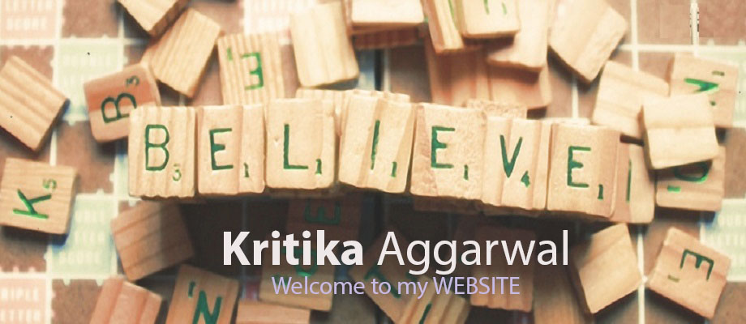
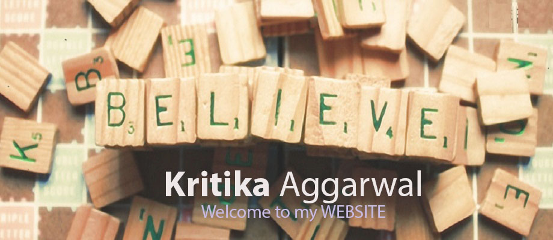

MY FIRST BLOG!
What is the difference between a startup and a small business?
Tom and Tara are neighbors in a hot tropical country. Both folks decided that they needed some shade in their backyard. Tom went ahead and bought a big umbrella. It was a bit expensive, but much less cumbersome.
Tara took her friend Tanya went to the nursery and bought a small plant. People thought she was crazy and she really was. She planted it in her backyard and watered it. Unfortunately, it is not easy to grow a plant in that condition and plants often died being unsuited to the place. Other times they grew in random direction.
She kept trying different types of plants, until one of them started growing fast. While the plant was growing it still was not offering any benefit. It was not providing a shade nor a fruit nor any other benefit. It just sucked a lot of water, manure and time.
After years, Tara's plant grew to become a large tree. It provided shade not just for Tara, but for a large region. It provided fruits and other benefits.
The umbrella that Tom brought stayed the same. It didn't grow. It didn't provide any fruit.
A small business is a self-sustaining organization that is designed to generate revenues or even profits from Day 1. It might not require as much investment and is less risky. However, it also doesn't have a lot of upside.
A startup is akin to a small plant. It doesn't offer any immediate benefits after planting, but just keeps sucking resources. Most plants you try to grow die before they become a tree. However, if it does survive and grows big, it can provide benefits for a long time to come. It can scale by growing vertically and also generate seeds for new child plants.

Another way to think of a startup is a new formula a chemist grows in his lab. It requires a lot of experimentation and have a high chances of failure. A startup entrepreneur who fails in an idea is akin to a chemist who builds an experiment that doesn't bring the result - it is part of the process.
Most people in the world don't get startups. They would keep complaining how people are investing in these ecommerce companies that don't make profits. Do you know farmers who plant seeds that don't become food right away? A farmer hopes to see the fruits of his labor much later in time. Same for startup founders and investors.
Tara didn't succeed in her first attempt. She had to plant multiple things to eventually find the right tree that would grow big. In the same way, startups have to keep trying out. It is not a sure shot thing.
Tara went on a crazy route and had to suffer in the sun, at a time when Tom was under the umbrella. In the same way, many startup founders willingly forgo profits or premature scaling to build a sustainable, scalable company. It is not the suggested route for all people for all time. However, such explosive payoffs require crazy thinking and crazy people.
Some people might attempt to both buy the umbrella and grow a plant. That way, they have a shade until the plant grows. In the same way, some startups build service businesses to build revenues while running the the startup. It works for some. It doesn't work for others. Living in shade, might take off your hunger to grow your plant. Or your shade might suffocate the plant without enough sunlight. In the same way, you might not be able to spend enough time or effort to grow the startup.
Finally, Tara was possibly after much more than shade - it is possibly a insatiable thirst to see something grow. In the same way, cash is just one small motivation for a startup founder. Seeing a complex life form take life is something highly addictive to watch. Some people cannot take eyes off their young plant. Or their baby that is just born - like a startup the baby cannot do any benefit in its first couple of years. Or their new pet. A startup is like that baby; like that young plant. The motivation to grow that is far more than any material benefits it can bring.